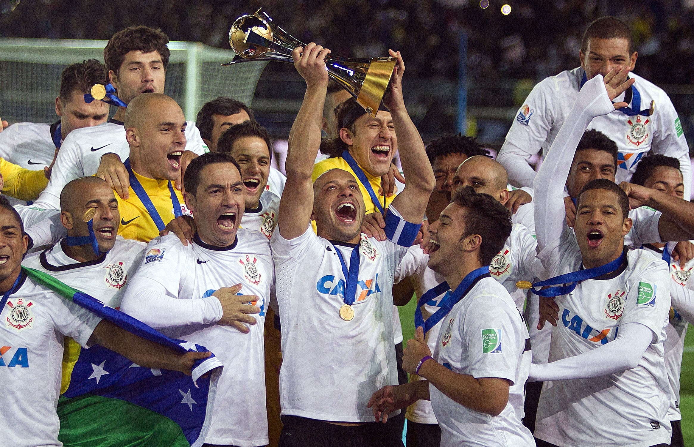

Time do Corinthians No Mundial de Clubes FIFA no ano 2000
História do Clube Paulista
Às 20h30 do dia 1º de setembro de 1910, à luz de um lampião, na esquina das ruas José Paulino e Cônego Martins, no bairro do Bom Retiro, o grupo de operários formado por Anselmo Corrêa, Antônio Pereira, Carlos Silva, Joaquim Ambrósio e Raphael Perrone fundaram o Sport Club Corinthians Paulista. Com mais oito rapazes, foi formada a reunião dos primeiros integrantes e sócio-fundadores do Timão, que teve seu nome inspirado na equipe inglesa Corinthian-Casuals Football Club, que fazia excursão pelo Brasil. O presidente escolhido por eles foi o alfaiate Miguel Battaglia, que, já no primeiro momento, afirmou: “O Corinthians vai ser o time do povo e o povo é quem vai fazer o time”. Um terreno alugado na Rua José Paulino foi aplainado, virou campo e foi lá que, já no dia 14 de setembro, o primeiro treino foi realizado diante de uma plateia entusiasmada, que garantiu: “Este veio para ficar!”.
"O Corinthians é muito mais que um tubo de futebol. O Corinthians é uma religião, é uma grande nação, mas muito mais que isso, o Corinthians é uma voz, o Corinthians é uma força."
Dr. Sócrates, sobre o Corinthians
Primeiro título do timão
Primeiro título do Sport Club Corinthians Paulista. Com 10 vitórias em 10 jogos disputados, o Timão marcou 37 gols e venceu a última partida por 3 a 0, contra o Lusitano, no Parque Antártica. O atacante Neco foi o artilheiro do torneio com 12 gols. O Alvinegro conquistou o Campeonato Paulista com uma rodada de antecedência. No dia 08 de novembro, a equipe derrotou o Campos Elyseos por 4 a 0 e sagrou-se campeã com a seguinte escalação: Aristides, Fúlvio e Casemiro González; Police, Bianco e César Nunes; Américo, Peres, Amílcar, Apparício e Neco.
Timão Levantando a Taça do mundial de clubes FIFA de 2012
O Mundial de Clubes FIFA do ano de 2000
O primeiro título mundial de clubes reconhecido pela Fifa veio com uma vitória nos pênaltis contra o Vasco depois do empate sem gols no tempo normal. A escalação da final foi: Dida, Índio, Adílson, Fábio Luciano e Kléber; Rincón, Vampeta, Ricardinho e Marcelinho; Edílson e Luizão. O Alvinegro fez seis gols em quatro jogos disputados. O segundo tento de Edílson no empate em 2 a 2 contra o Real Madrid é considerado um dos mais marcantes da história corinthiana.
O Mundial de Clubes FIFA do ano de 2012
Pela primeira vez na história, o Corinthians foi campeão da Libertadores. E, para ser perfeito, de forma invicta! Foram 22 gols marcados e apenas quatro sofridos em oito vitórias e seis empates. O atacante Emerson marcou os gols da vitória por 2 a 0 contra o Boca Juniors (ARG) no jogo de volta da grande final. A escalação da partida foi: Cássio, Alessandro, Chicão, Leandro Castán e Fábio Santos; Ralf, Paulinho, Danilo e Alex; Jorge Henrique e Emerson. O gol de cabeça Paulinho contra o Vasco, que levou o Corinthians às semifinais da Libertadores, já é considerado por muitos o mais marcante da história do clube. Além disso, o Timão conquistou a Copinha também de forma invicta e teve um atleta medalhista olímpico em Londres. O nadador Thiago Pereira ficou com a prata nos 400m medley. Em dezembro, o Bando de Loucos invadiu o Japão e viu o Corinthians conquistar o Mundial de Clubes da Fifa pela segunda vez. Guerrero marcou de cabeça e garantiu o título contra o Chelsea no ano que se tornou inesquecível para a Fiel Torcida.
Principais títulos do clube:
- 2 Mundiais de Clubes da FIFA - 2000 e 2012
- 1 CONMEBOL Libertadores - 2012
- 1 Recopa Sul-Americana - 2013
- 7 Campeonatos Brasileiros - 1990, 1998, 1999, 2005, 2011, 2015 e 2017
- 3 Copas do Brasil - 1995, 2002 e 2009
- 1 Campeonato Brasileiro série B - 2008
- 1 Supercopa do Brasil - 1991
- 5 Torneios Rio-São Paulo - 1950, 1953, 1954, 1966 e 2002
- 2 Taças dos Campeões Rio-São Paulo - 1929 e 1941
- 1 Taça Estado de São Paulo - 1962
- 30 Campeonatos Paulistas - 1914, 1916, 1922, 1923, 1924, 1928, 1929, 1930, 1937, 1938, 1939, 1941, 1951, 1952, 1954, 1977, 1979, 1982, 1983, 1988, 1995, 1997, 1999, 2001, 2003, 2009, 2013, 2017, 2018 e 2019
Conheça um pouco mais sobre a historia do Clube no site oficial.